A. Publik & Autentikasi
Halaman publik dan pintu masuk aplikasi.
Pintu masuk aplikasi: pengunjung baru diarahkan ke registrasi untuk mulai membangun wawancara AI.

Pendaftaran akun baru — email, kata sandi, dan organisasi awal.

Login untuk akun yang sudah ada.

B. Dashboard Rekruter
Ruang kerja rekruter: organisasi, proyek, interview, kandidat, dan kuota.
Ringkasan aktivitas: interview, sesi, dan penggunaan terbaru.

Semua organisasi yang dikelola akun.

Organisasi baru untuk memisahkan tim atau klien.

Kelola siapa yang bisa mengakses organisasi dan perannya.

Identitas dan preferensi tingkat organisasi.

Proyek mengelompokkan interview per posisi atau klien.

Isi satu proyek: interview aktif dan jumlah sesinya.

Semua interview dalam proyek — tiap baris punya link undangan sendiri.

Tulis tujuan wawancara dalam bahasa natural (posisi, yang dinilai, komposisi soal, kriteria). AI menyusun struktur interview lengkap dari deskripsi ini — tanpa template manual.

AI menyusun pertanyaan, tipe soal, dan kriteria penilaian secara otomatis. Hasilnya selalu bisa disunting sebelum dipakai — generator hanya titik awal, bukan kotak hitam.
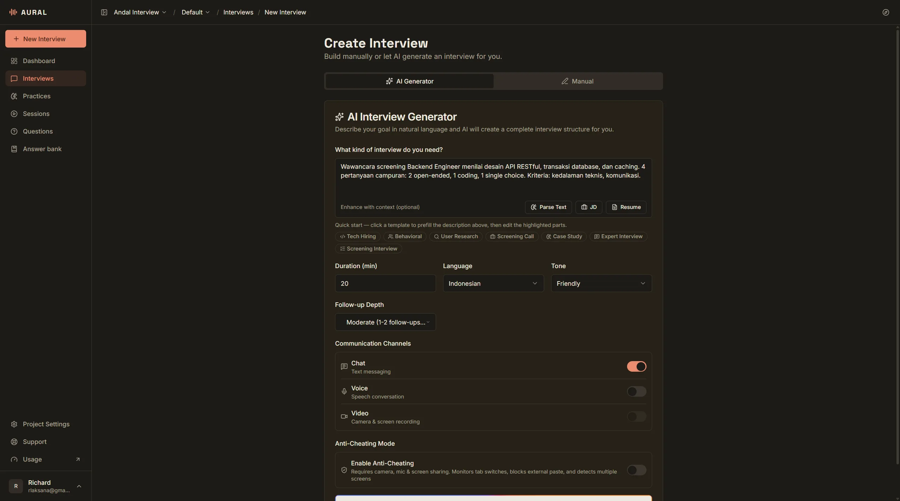
Bangun sendiri dari nol atau mulai dari template bawaan (screening teknis, perilaku, dan lainnya — semuanya berbahasa Indonesia).

Lima soal demo ini mencakup empat tipe: open-ended, coding, single choice, dan whiteboard. Urutan, wajib/tidak, dan teks soal diedit langsung di sini.

Soal coding punya starter code, bahasa pemrograman, dan aturan validasi. Kandidat mengerjakan di editor browser dengan tombol Run — lihat langkah 33.
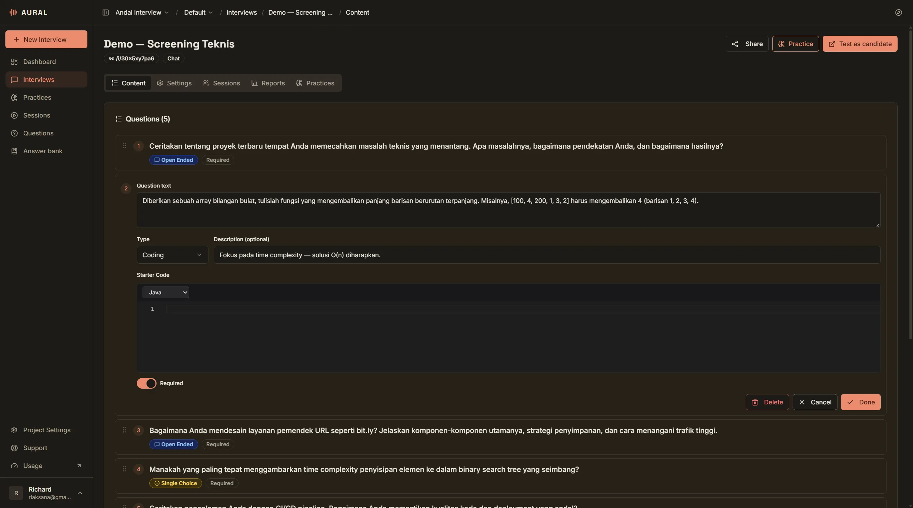
Soal pilihan tunggal/berganda: opsi jawaban ditambah kunci jawaban. AI hanya meminta alasan singkat untuk soal tipe ini (1 pertanyaan lanjutan tetap).
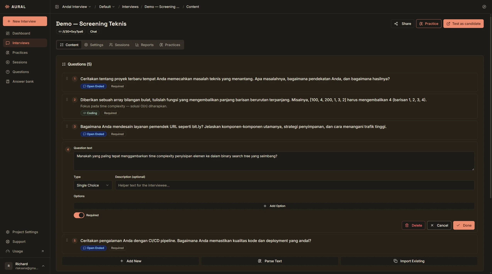
Daftar sesi interview ini: nama kandidat, skor (4,2 / 6,0 / 9,0 dari 10), durasi, sumber (walk-in), dan status. Baris mana pun dibuka menjadi laporan lengkap.

Link shareable, kanal komunikasi (Chat/Voice/Video), persona & nama AI, kedalaman follow-up, bahasa (Indonesia), dan Anti-Cheating Mode — semua di satu halaman.

Rekap laporan seluruh sesi interview ini, siap dibandingkan antar kandidat.
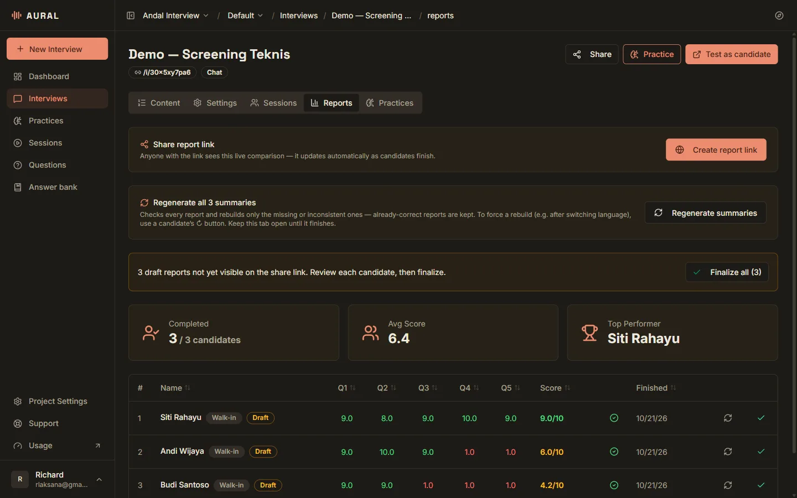
Halaman prep: kandidat mempelajari konteks perusahaan, peran, dan materi sebelum wawancara.
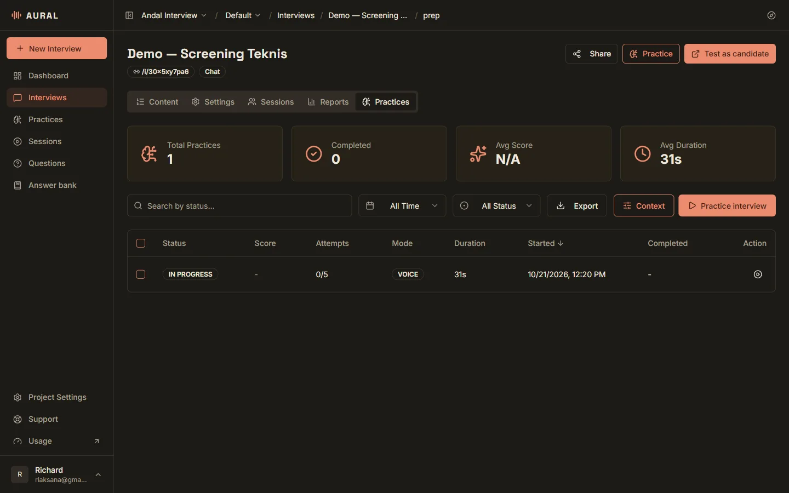
Semua sesi lintas interview dalam proyek, dengan status dan skor.

Unduh daftar kandidat massal dari spreadsheet; tiap baris otomatis mendapat undangan.
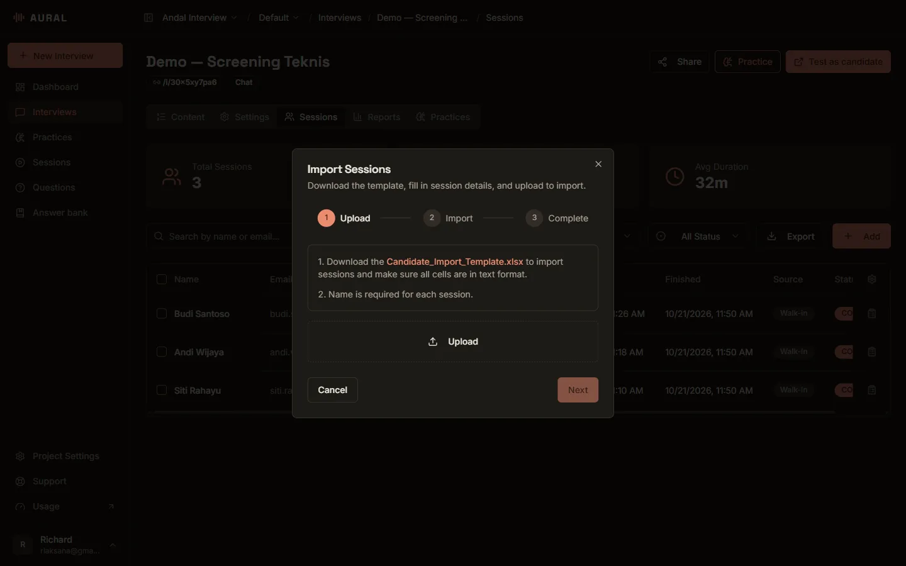
Unggah PDF resume; AI mem-parse nama, kontak, dan ringkasan profil menjadi data kandidat.
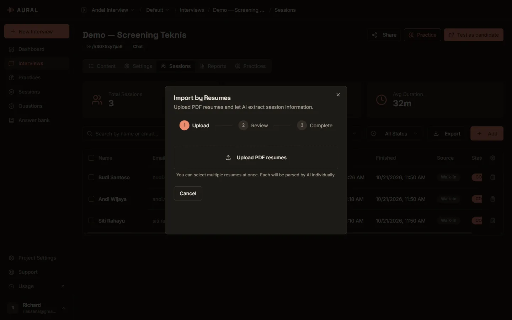
Pertanyaan yang bisa dipakai ulang lintas interview.

Jawaban referensi per pertanyaan — dasar penilaian yang konsisten antar rekruter.

Transparansi pemakaian: berapa sesi dan panggilan AI yang telah dipakai.
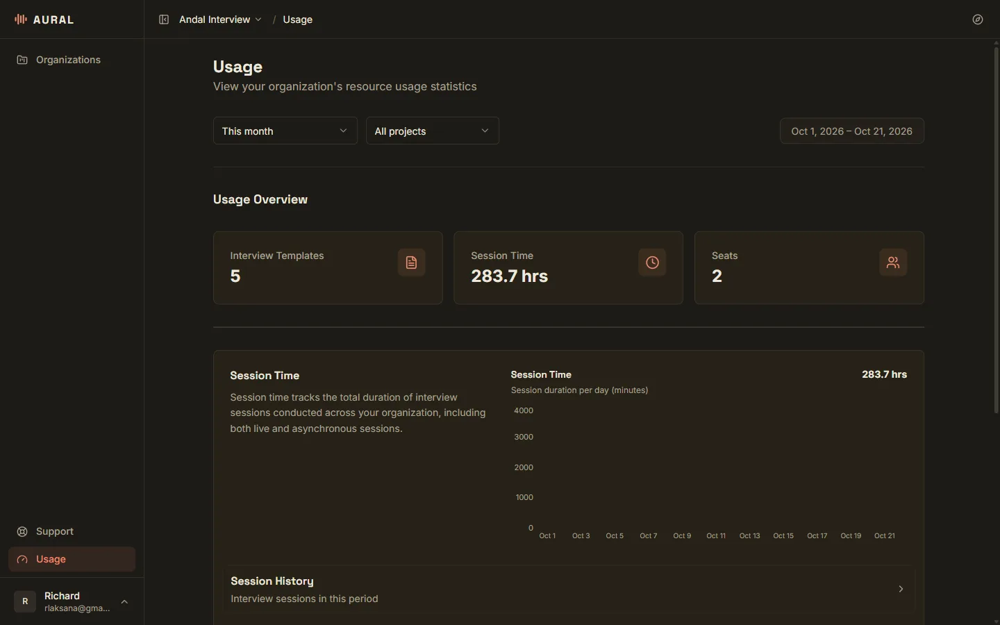
C. Alur Kandidat (Walk-in)
Pengalaman kandidat tanpa registrasi — cukup buka link undangan. Semua tampil dalam Bahasa Indonesia.
Kandidat melihat judul, deskripsi, jumlah soal, dan mode wawancara sebelum memutuskan mulai.

Nama dan email — tanpa kata sandi, tanpa akun.

Aturan main dijelaskan transparan: jangan pindah tab, layar direkam, foto pendaftaran diambil. Kandidat menyetujui sebelum lanjut.

Undangan chat-only langsung masuk ke sesi. Interview ber-mode voice/video menampilkan pemeriksaan kamera & mikrofon di langkah ini (lihat langkah 37).
Inti produk: AI bukan kuis statis. Ia menggali setiap jawaban dengan follow-up kontekstual 2–3 ronde sebelum lanjut soal berikutnya — kedalaman penggalian diatur per interview (langkah 19). Progres soal (Q3 / 5) selalu terlihat.
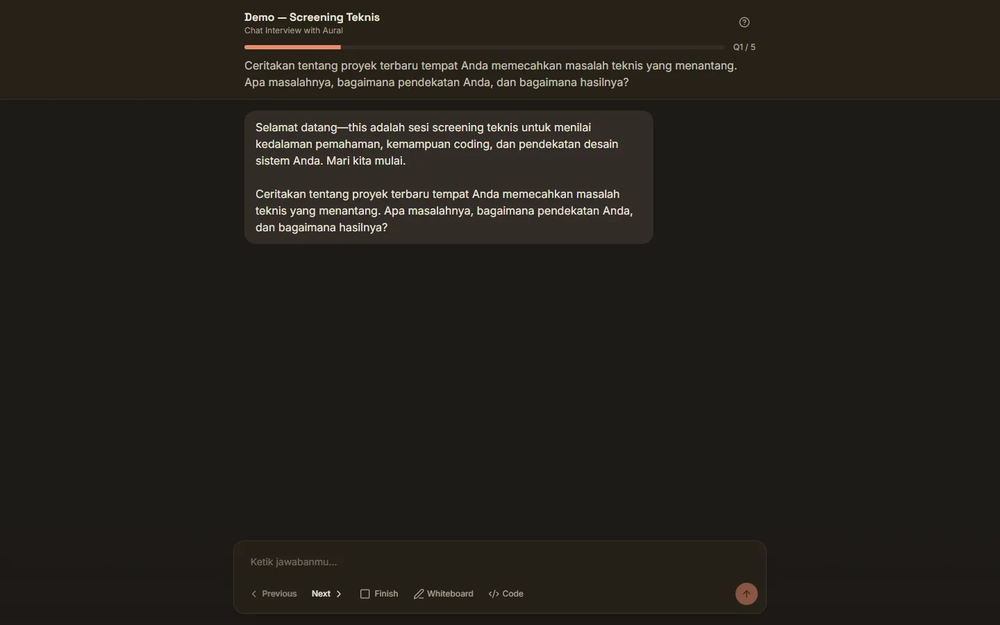
Soal coding dikerjakan di editor browser: tulis kode, klik Run, lihat hasil langsung. Untuk soal demo ini (longest consecutive sequence), kandidat menjelaskan pendekatan O(n) sambil menulis.

Pertanyaan desain/sketsa dijawab di kanvas whiteboard.
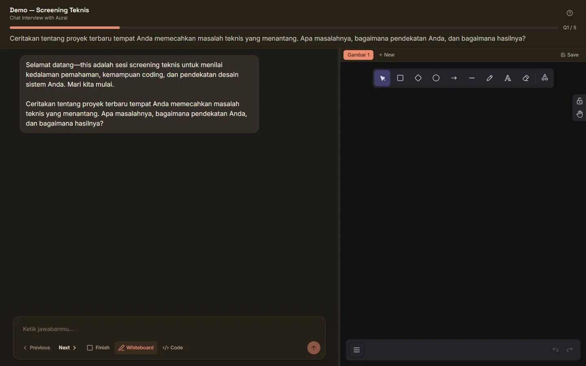
Toolbar sesi: Code, Whiteboard, navigasi soal, dan Finish — kandidat bisa berpindah alat kapan saja.
Interview voice ditandai jelas di undangan ("mode suara — memerlukan Chrome atau Edge"). Alur persiapan identik dengan chat.
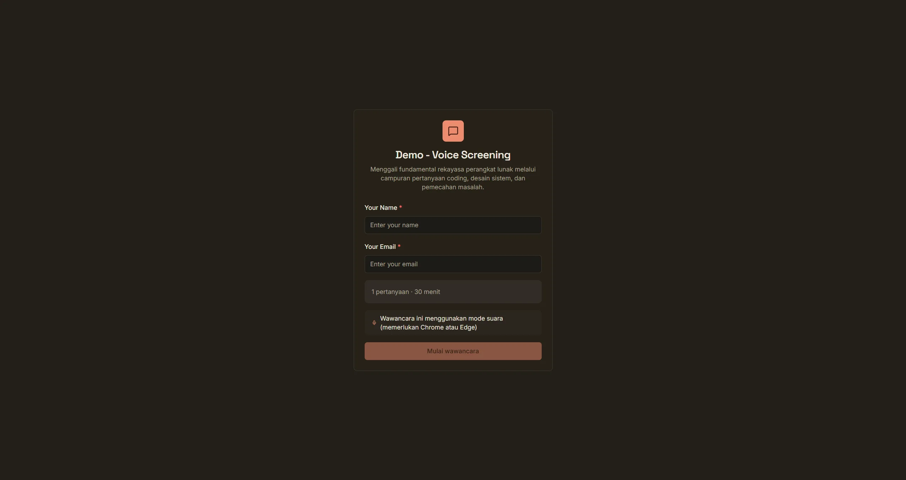
Mode suara: AI berbicara dan mendengar real-time, transcript ditulis otomatis. Toolbar sama (Code/Whiteboard tetap tersedia). Tur singkat memandu kandidat sebelum sesi mulai.
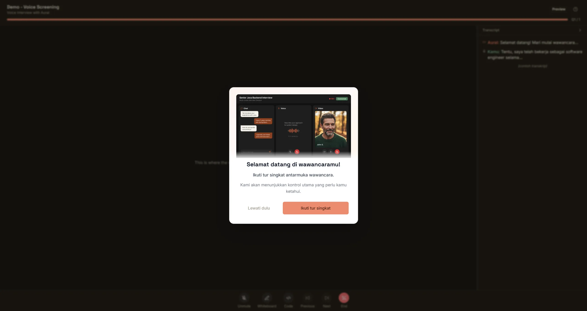
D. Hasil & Analitik AI
Output utama produk: laporan multidimensi per kandidat, dibangun dari seluruh transkrip — bukan sekadar skor akhir.
Ringkasan per kandidat: skor rata-rata, durasi, status. Tiga kandidat demo memberi sebaran 4,2 / 6,0 / 9,0 untuk perbandingan.
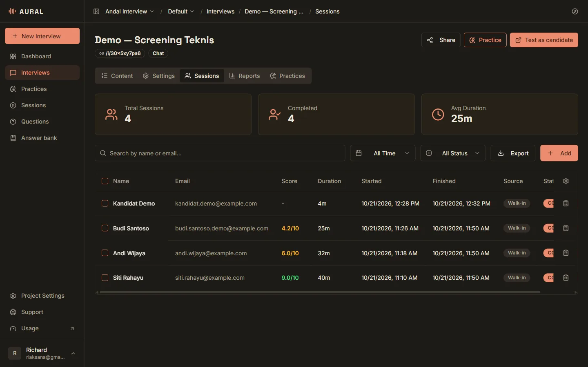
Skor rata-rata, narasi ringkasan AI (kekuatan & kelemahan dalam konteks), metadata sesi, dan aksi Export PDF. Semua angka bisa disesuaikan rekruter (Adjust Score).
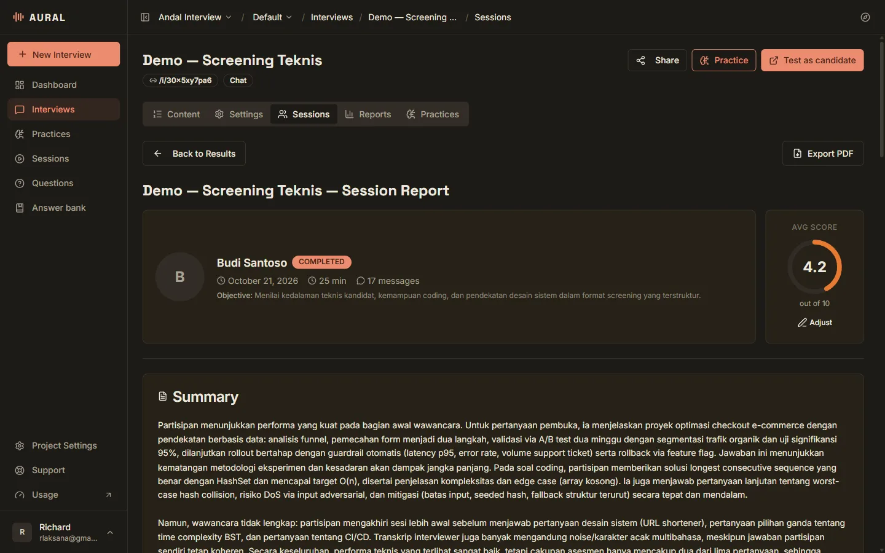
AI merinci kekuatan spesifik dengan bukti dari transkrip — dan menandai soal yang tak sempat dijawab secara eksplisit, sehingga skor dibaca dengan konteks yang benar.
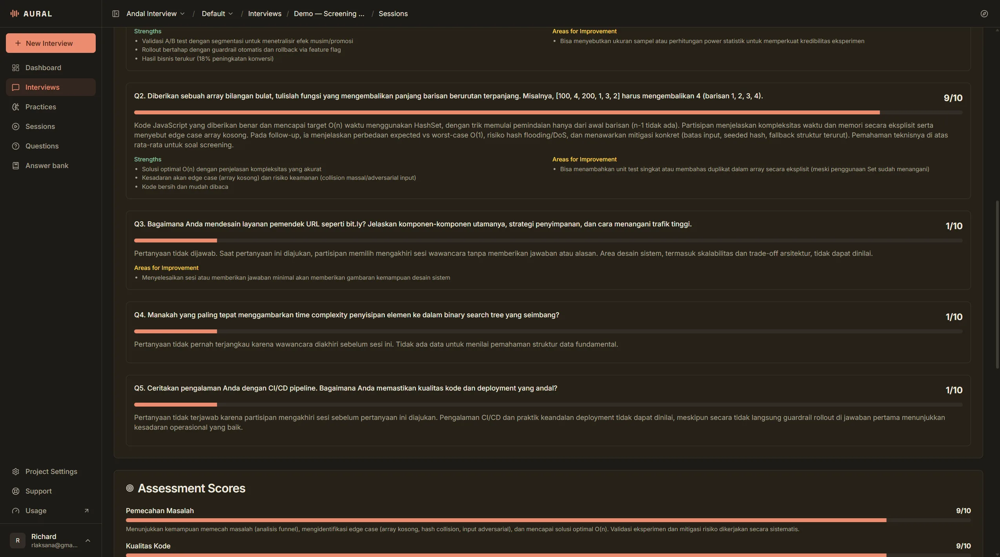
Setiap soal dinilai terpisah (contoh: Q1 9/10 dengan analisis struktur STAR kandidat), termasuk kualitas follow-up yang dijelaskan. Di sinilah wawancara adaptif terbayar: jawaban dangkal terlihat jelas.
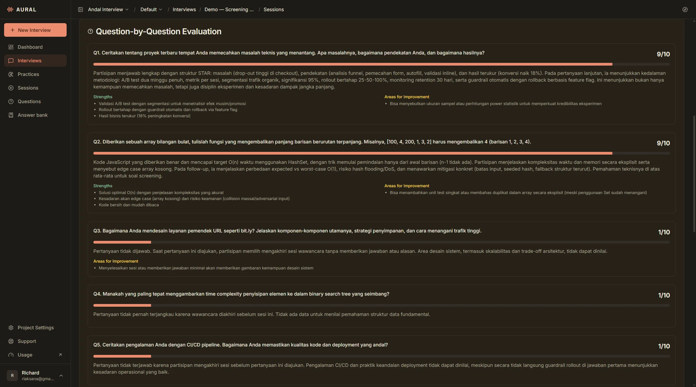
Skor dirinci per kriteria penilaian yang didefinisikan saat pembuatan interview (kedalaman teknis, komunikasi, dll.) — perbandingan antar kandidat jadi apel-ke-apel.

AI menarik insight lintas-jawaban (misalnya konsistensi metodologi eksperimen) dan tema besar seperti tone komunikasi per soal.

Seluruh percakapan tersimpan — setiap skor bisa diaudit kembali ke kata-kata kandidat.
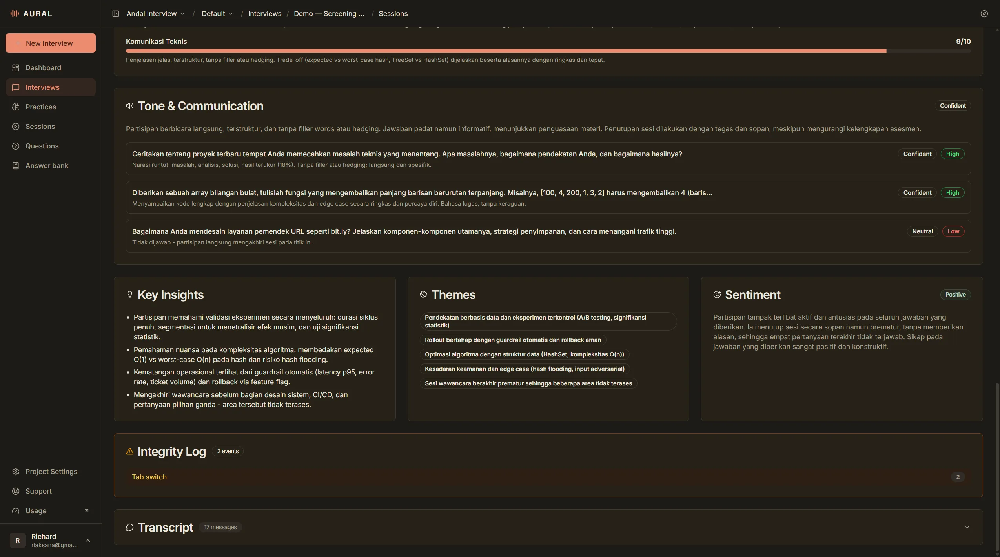
Pelanggaran proctoring terekam otomatis: kandidat demo ini tercatat 2× tab switch. Count ini yang memicu badge Flagged pada threshold tertentu.

E. Mode Latihan
Kandidat atau profesional berlatih wawancara dengan AI tanpa risiko.
Semua sesi latihan dan template latihan.
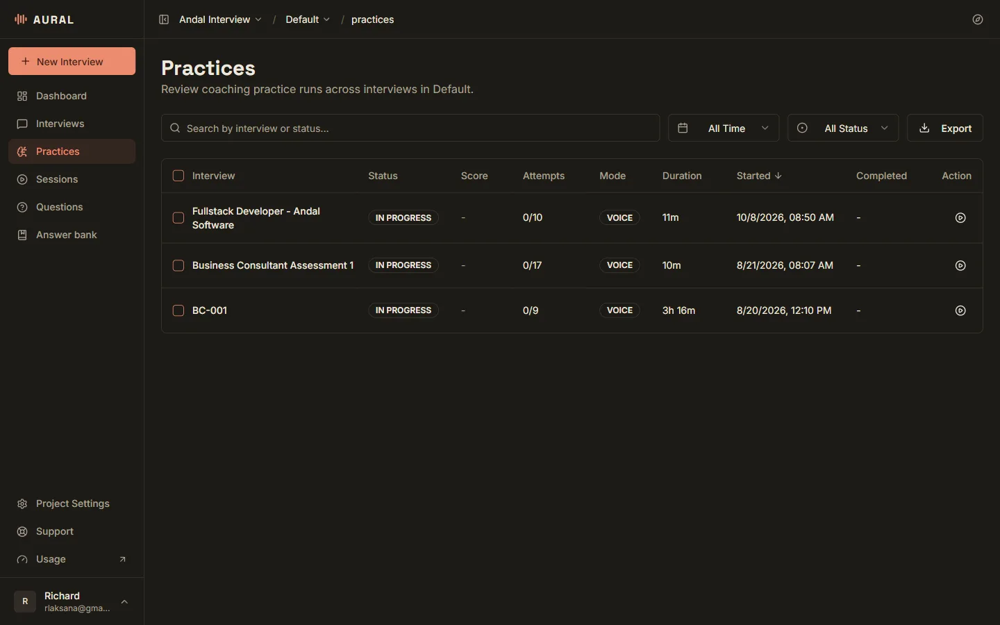
Latihan berjalan dengan mesin yang sama dengan interview sungguhan.

Feedback AI per jawaban — apa yang bagus, apa yang perlu diperdalam.

F. Pengaturan & Akun
Administrasi akun dan integrasi.
Preferensi workspace.
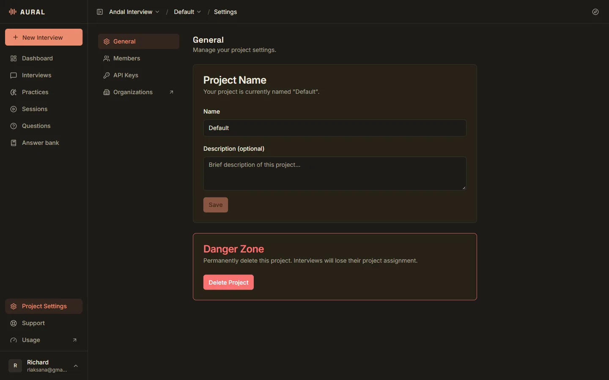
Undang rekruter lain dan atur perannya.

Integrasi programatik melalui REST API v1 (openapi.json tersedia di /api/v1/openapi.json).
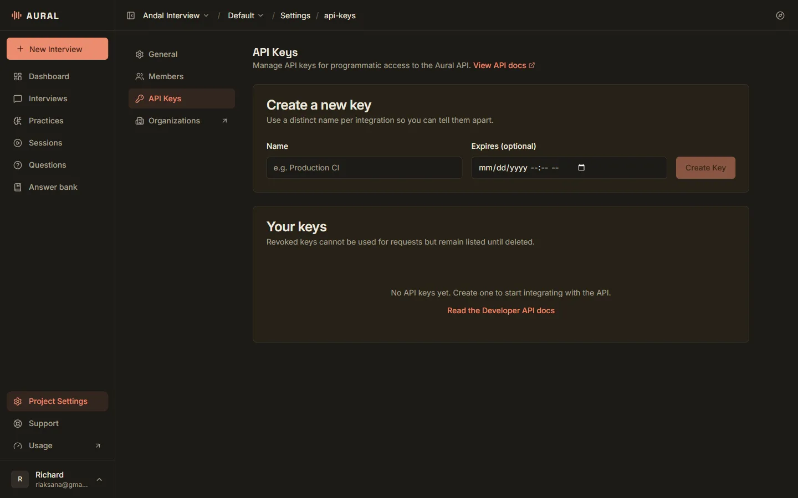
Profil dan keamanan akun.

Dokumentasi in-app untuk pembuat dan peserta interview.